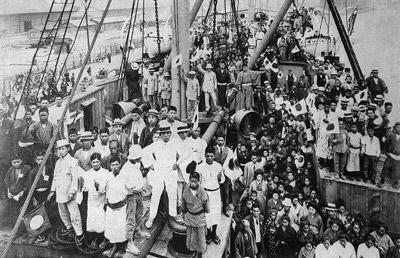
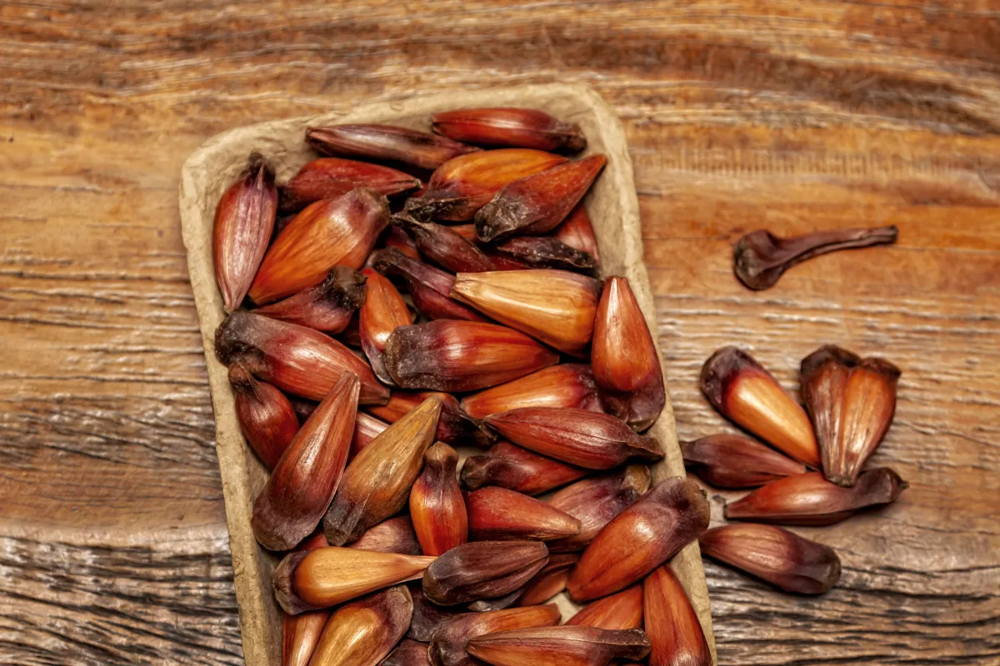
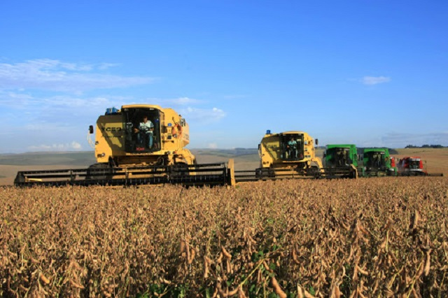

SEJAM BEM VINDOS AO MEU SITE
Quando falamos em uma terra de gigantes, nos referimos tanto à imponência de suas grandes obras e riquezas — como a Usina Hidrelétrica de Itaipu e a força estrondosa do seu agronegócio — quanto à grandiosidade cultural dos imigrantes que aqui moldaram uma identidade plural.

Culturas do Paraná
O Paraná foi colonizado por uma fusão rica de povos nativos indígenas, tropeiros e ondas massivas de imigrantes (poloneses, ucranianos, italianos, alemães, japoneses e alemães).

Imigrantes no Paraná
O Paraná é o terceiro estado brasileiro que mais recebe imigrantes no país, abrigando dezenas de nacionalidades. A população estrangeira é formada tanto pela imigração histórica europeia e asiática do século XIX e XX quanto por fluxos contemporâneos latino-americanos e caribenhos em busca de oportunidades de trabalho e segurança Principais Origens: A maior parte dos recém-chegados é da América Latina e do Caribe, com forte presença de venezuelanos, haitianos, paraguaios, argentinos e cubanos. Distribuição: Curitiba e Região Metropolitana concentram o maior volume de registros, seguidas por regiões de fronteira como Foz do Iguaçu e municípios agrícolas do interior.
